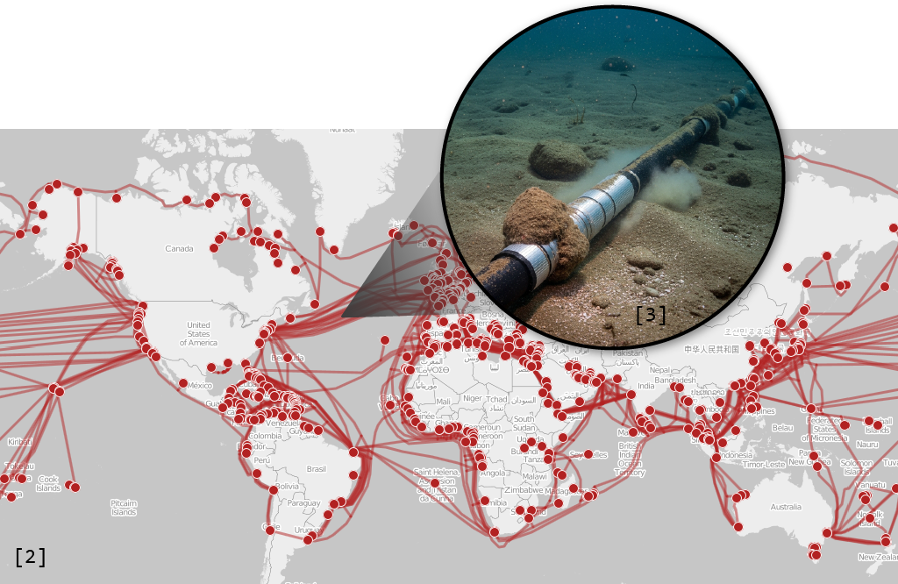

เคยสงสัยกันไหมครับว่า หลักฟิสิกส์พื้น ๆ ที่เราเรียนกันตอนมัธยม จะสามารถนำมาใช้เป็นเทคโนโลยีเปลี่ยนโลกได้อย่างไร วันนี้เราจะมาพูดถึงฟิสิกส์ของแสง และพาทุกคนไปดูกันว่าสิ่งนี้ถูกนำไปใช้กับอินเทอร์เน็ตความเร็วสูง หัวใจของการติดต่อสื่อสารข้อมูลในโลกยุคใหม่ได้อย่างไร
เกิดอะไรขึ้นเมื่อแสงเคลื่อนที่เปลี่ยนตัวกลาง : หลักการหักเหและสะท้อน
เรื่องราวของเราเริ่มต้นที่หลักฟิสิกส์ง่าย ๆ ที่เกิดเมื่อแสงเดินทางมาเจอแนวรอยต่อระหว่างตัวกลาง เช่น แสงจากอากาศถูกยิงลงมาที่ผิวแก้ว
ลองยิงแสงลงไปด้วยมุมยิงต่าง ๆ ดูนะ
จะเห็นว่าบางส่วนของแสงจะ "หักเห" ผ่านเข้าไปในแก้ว ในขณะที่บางส่วนจะ
"สะท้อน" กลับออกมาสู่อากาศ และถ้าเราลองปรับมุมที่ยิงแสงไปตกกระทบดู
จะพบว่าเมื่อมุมเปลี่ยน
ปริมาณของแสงส่วนที่หักเหและสะท้อนก็จะเปลี่ยนไปด้วย
(สังเกตได้จากความเข้มของแสง)
ตรงนี้น้อง ๆ
ที่เรียนฟิสิกส์ก็จะได้เรียนเกี่ยวกับหลักการหักเหและสะท้อนว่า
การหักเห : มุมตกกระทบและมุมหักเหจะเป็นไปตามกฎของ Snell
การสะท้อน : มุมตกกระทบและมุมสะท้อนจะมีขนาดเท่ากัน
เมื่อแสงถูกกักขังไว้ในแก้ว : การสะท้อนกลับหมดของแสง
ความน่าสนใจของเรื่องนี้จะเกิดขึ้นเมื่อเราเปลี่ยนให้แสงถูกยิงขึ้นมาจากแก้ว ออกสู่อากาศแทน
ลองยิงแสงด้วยมุมยิงต่าง ๆ ดูอีกครั้งนะครับ
คราวนี้จะเห็นว่าเมื่อปรับมุมตกกระทบไปเรื่อย ๆ
จะมีบางช่วงที่ไม่มีแสงส่วนใดหักเหออกมาสู่อากาศได้เลย
และแสงทั้งหมดจะสะท้อนกลับเข้าไปในแก้ว เหตุการณ์แบบนี้เรียกว่า
การสะท้อนกลับหมดภายใน
ตรงนี้น้อง ๆ ที่เรียนฟิสิกส์ก็จะต้องรู้เพิ่มเติมอีกนิดนึงครับ
ว่ามุมตกกระทบที่เริ่มทำให้แสงเกิดการสะท้อนกลับหมด
จะเป็นมุมตกกระทบที่ทำให้มุมหักเหเป็น 90 องศาพอดี
และเราเรียกมุมตกกระทบนี้ว่า
มุมวิกฤต
ถ้ายิงแสงด้วยมุมมากกว่านี้ก็จะเกิดการสะท้อนกลับหมดอย่างแน่นอน
อ่านอย่างเดียวอาจจะงง ลองทดสอบกับ Interactive Diagram นี้ดูครับ
เส้นเลือดหลักของโลกยุคข้อมูลข่าวสาร : เทคโนโลยี Fiber Optic
หลังจากปวดหัวกับทฤษฎีทางฟิสิกส์ไปแล้ว ก็ได้เวลาเก็บเกี่ยวผลที่ได้ และมาสนุกกับเทคโนโลยีของโลกสมัยใหม่กันครับ เรื่องราวก็คือหลังจากที่มนุษย์รู้แล้วว่าเราสามารถ "กักเก็บ" แสงเอาไว้ในแก้วได้ ก็เกิดไอเดียว่าถ้าเราสามารถเชื่อมต่อสถานที่ที่ห่างไกลกันด้วยแก้วเส้นบาง ๆ ได้ล่ะ เราก็สามารถส่งสัญญาณแสงผ่านเส้นแก้วนี้เพื่อรับส่งข้อมูลระหว่างกันได้
จะเห็นได้ว่าสัญญาณแสงจะเคลื่อนที่ไปตามเส้นแก้ว และเมื่อแสงเคลื่อนที่ไปเจอกับผิวของเส้นแก้ว ก็จะเกิดการสะท้อนกลับหมด ทำให้แสงไม่รั่วไหลออกมาภายนอกเลย ซึ่งก็เป็นหน้าที่ของวิศวกรที่จะต้องแน่ใจว่ามุมตกกระทบของแสงมีค่ามากกว่ามุมวิกฤตในระหว่างการใช้งานนั่นเองครับ
มาถึงตรงนี้หลาย ๆ คนคงเริ่มนึกออกกันแล้วว่าเส้นแก้วนี้ก็คือเทคโนโลยี Fiber Optic ที่หลาย ๆ บ้านใช้เชื่อมต่ออินเทอร์เน็ตกันนั่นเอง แต่รู้กันไหมว่านอกจากสาย Fiber Optic สั้น ๆ ที่เห็นกันตามบ้านแล้ว สาย Fiber Optic ยังถูกใช้เชื่อมต่อระหว่างทวีปต่าง ๆ บนโลก โยงใยกันเป็นเครื่องข่ายซับซ้อนข้ามมหาสมุทร คอยรับส่งข้อมูลจากซีกโลกหนึ่งไปยังอีกซีกโลกหนึ่งได้ภายในไม่กี่อึดใจ เรียกได้ว่าเป็นเส้นเลือดที่คอยหล่อเลี้ยงโลกทั้งใบไว้ด้วยข้อมูลปริมาณมหาศาลในทุก ๆ วินาทีเลยนั่นเอง
ดังนั้นครั้งต่อไปที่เราส่งข้อความหาใครสักคน หรือสั่งให้ AI ช่วยทำการบ้าน ก็มั่นใจได้เลยว่ากำลังมีสัญญาณแสงเล็ก ๆ ส่งผ่านเส้นแก้วเหล่านี้เป็นระยะทางไกลลิบ เพื่อส่งข้อมูลที่ต้องการออกไปให้เราครับ
แหล่งที่มารูปภาพ :
[1] optical cable by Oona Räisänen, 9 August 2007. (Public Domain)
[2] cable data by Greg Mahlknecht, map by Openstreetmap contributors
(Open Database License/CC-BY-SA 2.0), 21 July 2015.
[3] AI generated by Imagen, 25 August 2025